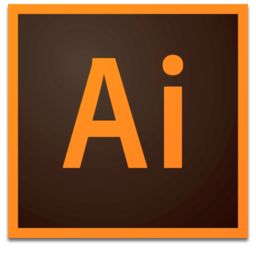

Adobe Illustrator CC - одно из ведущих в отрасли мобильных приложений для дизайна векторной графики, позволяющее создавать логотипы, значки, эскизы, типографику и сложные иллюстрации для печатных изданий, веб-публикаций, интерактивных ресурсов, видео и мобильных устройств.
Векторная графика
